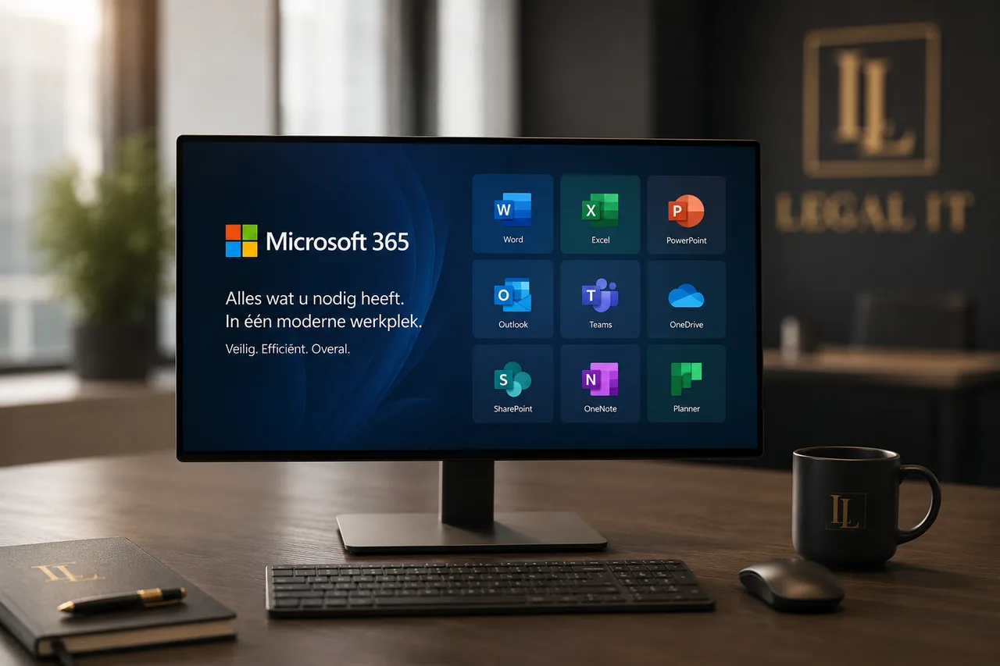

Moderne werkplekVeel notariskantoren overwegen de overstap naar een moderne werkplek met Microsoft 365, of hebben al een Microsoft 365-omgeving die niet optimaal wordt benut. Vaak komt dat door een gebrek aan specifieke kennis — van zowel de technologie als de notariële praktijk.
Legal IT is gespecialiseerd in het inrichten én beheren van Microsoft 365 voor notariskantoren, zodat uw medewerkers efficiënter, veiliger en flexibeler kunnen werken. Wij hebben hiervoor exact dezelfde aanpak en expertise als ons zusterbedrijf Cura ICT in de zorg — nu volledig toegespitst op het notariaat.
Een inrichting afgestemd op het notariaat
Op een notariskantoor zijn eenvoudige toegang en flexibiliteit essentieel. Met onze op maat gemaakte Microsoft 365-inrichting worden nieuwe apparaten — van desktops tot laptops, tablets en smartphones — automatisch volledig ingesteld zodra een medewerker inlogt. Daardoor kan iedereen direct aan de slag met alle benodigde applicaties, dossiers en informatie. Het resultaat is een gestroomlijnde IT-ervaring, zodat uw medewerkers zich kunnen richten op waar het echt om draait: het werk voor uw cliënten.
Beter samenwerken en gebruiksgemak
Veel medewerkers gebruiken slechts een deel van wat Microsoft 365 te bieden heeft. Legal IT levert configuraties op maat, zodat uw kantoor toegang heeft tot precies de tools die het nodig heeft. We maken dossiers, documenten en communicatiekanalen eenvoudig en veilig toegankelijk. Door te werken in de cloud werkt uw team moeiteloos samen in Microsoft Teams en SharePoint, communiceert het veilig met externe partijen — zoals cliënten, makelaars en collega-kantoren — en maakt het gebruik van extra mogelijkheden zoals veilig mailen. Zo nemen de efficiëntie én de veiligheid tegelijk toe.
Probleemloos printen via de cloud
Ondanks alle digitalisering blijft printen op een notariskantoor belangrijk. Met de cloudoplossingen van Microsoft 365 beheert u al uw printers centraal. Dat maakt printen niet alleen eenvoudiger, maar zorgt er ook voor dat printopdrachten soepel verlopen — ook als uw kantoor meerdere vestigingen heeft. Uw medewerkers hebben altijd en overal toegang tot de juiste printerinstellingen, zonder gedoe.
Werken op mobiele apparaten en beheer op afstand
Medewerkers die onderweg of bij cliënten werken, hebben behoefte aan eenvoudige en veilige toegang tot hun werk via mobiele apparaten. Onze moderne werkplek ondersteunt dit volledig. Met Mobile Device Management (MDM) beheren wij al uw telefoons en tablets, bewaken we welke apps geïnstalleerd zijn en beschermen we uw gegevens. Zo benut u de mogelijkheden van de cloud met een gerust hart.
Veiligheid: uw gegevens beschermd in de cloud
Bij het notariaat staat vertrouwelijkheid voorop. Het beschermen van akten, dossiers en persoonsgegevens is essentieel. Daarom richten wij uw cloudomgeving altijd in volgens een hoge beveiligingsstandaard, met een beheerstrategie die aansluit op de processen van uw kantoor. Met maatregelen als Microsoft Defender, Multi-Factor Authentication en heldere toegangsrechten werken uw medewerkers veilig, met waarborgen tegen datalekken en ongeautoriseerde toegang.
Volledig werkplekbeheer op maat
Naast de inrichting verzorgt Legal IT het volledige beheer van uw Microsoft 365-werkplek. Dat beheer kan aanvullend zijn op uw eigen mensen of volledig door ons worden uitgevoerd. Wij zorgen dat uw omgeving up-to-date blijft, probleemloos functioneert en blijft voldoen aan de relevante wet- en regelgeving. Zo blijven uw medewerkers gefocust op hun dagelijkse werk, terwijl wij zorgen voor een optimaal functionerende werkplek.
Kostenbesparend en slim licentiebeheer
Een belangrijk voordeel van Microsoft 365 is dat licenties efficiënt kunnen worden ingezet. Onze specialisten helpen u bij het kiezen van de juiste licenties voor uw kantoor. We zorgen ervoor dat u voldoet aan alle functionele eisen én kosten bespaart door slimme keuzes te maken, afgestemd op de verschillende rollen binnen uw organisatie.
Een solide basis met een Microsoft 365 baseline
Bij de start van een project leggen wij een baseline vast voor de inrichting van uw Microsoft 365-omgeving. Deze basisconfiguratie documenteren we zorgvuldig, zodat die altijd beschikbaar is voor audits, datalekrapportages of procesverbeteringen. Zo heeft uw kantoor een duidelijk referentiepunt en waarborgen we consistentie in uw IT-processen.
- Apparaten automatisch ingericht bij de eerste login
- Samenwerken in Microsoft Teams en SharePoint
- Veilig mailen en communiceren met externe partijen
- Mobile Device Management voor telefoons en tablets
- Centraal printerbeheer, ook over meerdere vestigingen
- Volledig beheer, updates en beveiliging op maat
Klaar voor een moderne, zorgeloze werkplek?
We brengen uw huidige situatie in kaart en stellen een voorstel op maat samen.
Plan een gesprek →